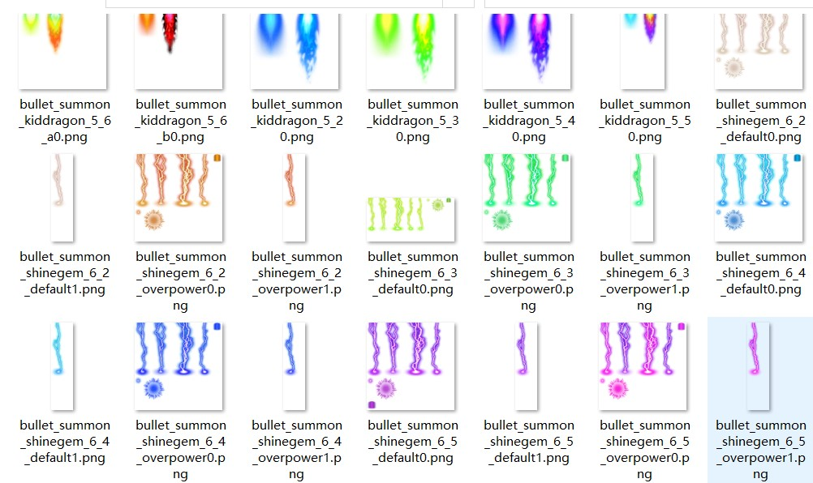

个人
优点
1、想法多，创新能力强，灵活运用现实的素材或知识进行有机地结合
例：该视频适用于python、c++体验课，scratch造型、显示隐藏的理解
2、素材多，涉及面广，能制作出各式各样的项目，在符合大纲的前提下能更好地开拓学生的视野
优缺点
1、指的是进入一个陌生的环境时，能让自己成为其中的一员，在参加一份工作或者参加组织工作时，能尽量全心全意的投入其中。
2、适应性：没有特别的要求，可以努力适应随时到来的环境和工作。
3、人际交往能力：比较随和，易相处
4、学习性：虽然没有丰富的知识和经验，可是具有良好的学习能力。
5、执着与执行力：做事情有勇于坚持的毅力，不会轻易放弃，并且在执着的同时，拥有一定的执行力。
6.比较缺乏自信和社会经验